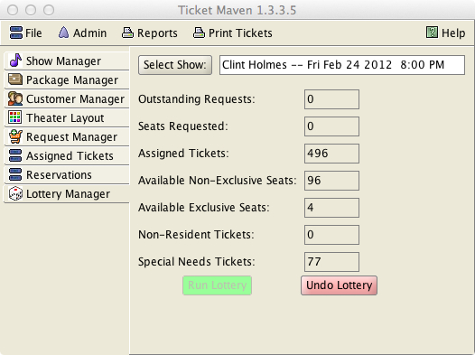
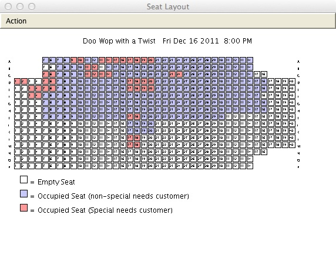
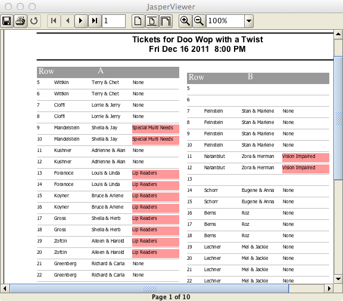

Running a Lottery
To run a lottery, go to the Lottery Manager tab.
From this tab, select a show. Only shows that have not occurred yet can be selected.
Once a show is selected, various data items will be shown for that show, such as:
The number of ticket requests for the show that have not been fulfilled
The number of seats requested by the unfulfilled requests. Note: a single request is for 1 or more seats.
The number of seats already assigned for the show, either manually from the Assigned Tickets tab, or through a prior lottery run against this show.
The number of available seats remaining for this show.
The number of non-resident tickets assigned for this show.
The number of special needs tickets assigned for this show.
The green Run Lottery button will only be enabled for shows that have at least 1 outstanding request and that have at least 1 available seat.
Pressing the Run Lottery button will run a ticket lottery for the selected show.

The following occurs during a lottery:
Outstanding requests are chosen to receive tickets. These requests are chosen in the reverse order of past quality. That means that the customers with the worst past quality get first choice of seats.
Requests are assigned seats. If a request is for more than 1 seat, it will only be assigned tickets if there are enough contiguous seats remaining to satisfy the request. Parties will not be split up during the lottery. This can be done manually before or after the lottery from the Assigned Tickets tab if needed.
Special needs customers will be assigned seats based on their special needs requirements. Please see the help topic on special needs for more information on the types of special needs. All Special Needs tickets are assigned before non-special needs tickets. The reason for this is that special needs customers usually have a far more limited selection of possible seats. If special needs customers are not assigned first, then non-special needs customers will quickly fill the special needs seats, excluding special needs customers from a show that might be half-empty.
All seats are given a “quality” value in the seat layout (1-30, 30 = best). All seats are ordered by quality. If two seats have the same quality, it is assumed that the seat further towards the front and center is better.
The lottery assigns seats until no requests remain unfulfilled or no seats remain.
When a request is assigned, the request in the database is removed and tickets are added. This means that after the lottery runs, any remaining requests are all unfulfilled. All requests that have been ticketed are changed into assigned tickets in the database.
Seats may remain unassigned for an over-sold show if none of the remaining requests can be assigned a contiguous group of seats given the remaining seat choices. These seats can be assigned manually from the Assigned Tickets tab.
After the lottery runs, if the user of this program wishes to manually change the seating assignment, they can do so from the Assigned Tickets tab. Tickets can be manually assigned before the lottery runs as well.
The assigned tickets can be printed from an option under the Print Tickets menu.
Reports
Various reports can be printed for use at the show, such as the graphical seating layout and the ticket report for a show. These can be used if customers are allowed to buy tickets in person at the show. The program can print the remaining unsold tickets as well.

Ticket Report (Used for after-Lottery sales)

A report of the unfulfilled requests can be printed to aid in the notification and/or refund of customers that did not get tickets.
After a lottery is run for a show, it can be rerun if there are still outstanding requests and available seats. The tickets that have already been assigned will not be affected in this case. Rerunning a lottery would mainly serve to assign late requests received after the initial lottery.